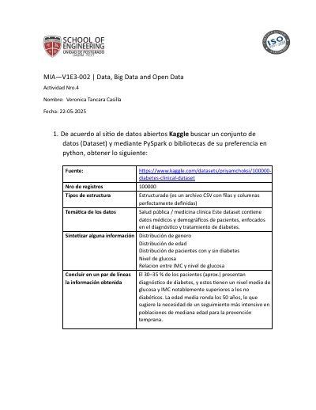
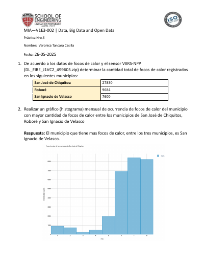
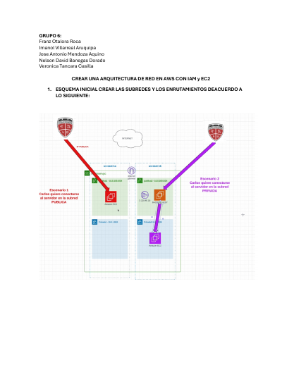
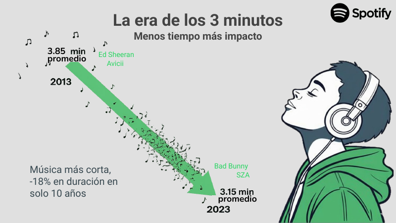
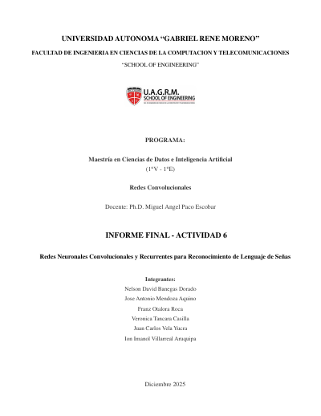
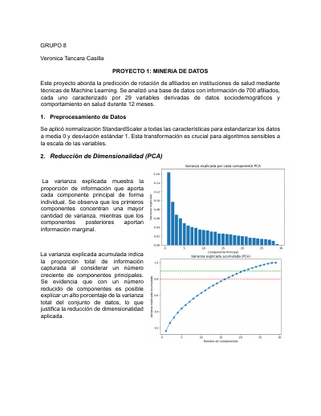
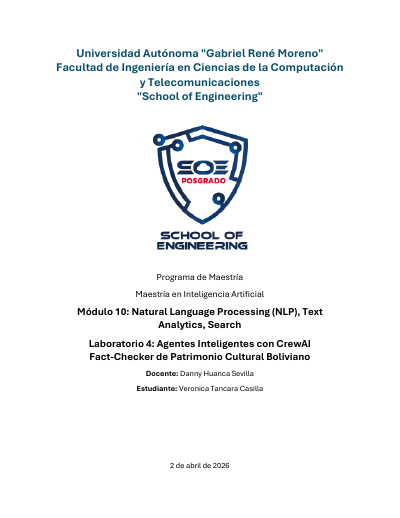
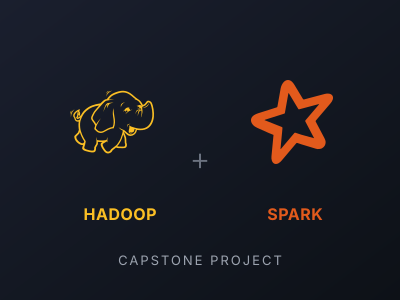
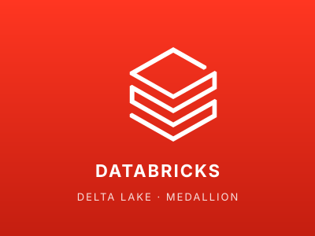

Veronica Tancara
Data Scientist · Maestría en Data Science (MIAV1E3, UAGRM SOE)
Portafolio académico con proyectos desarrollados durante los 13 módulos de la maestría. Incluye trabajos en Big Data, Machine Learning, NLP, Cloud, BI y análisis estadístico. Sección destacada arriba; el detalle por materia se encuentra debajo.
Proyectos destacados

Análisis de gran volumen de datos con PySpark
Procesamiento de un dataset masivo con Apache Spark para realizar análisis exploratorio, agregaciones y consultas distribuidas usando PySpark sobre HDFS.

Análisis geoespacial de focos de calor
Análisis de datos satelitales geoespaciales para detectar y caracterizar focos de calor, combinando procesamiento de datos abiertos con visualización cartográfica.

Administración de servidores en AWS — red personalizada
Diseño e implementación de una infraestructura cloud en AWS con red personalizada (VPC), subredes públicas y privadas, y administración de servidores EC2.

Predicción de enfermedad cardíaca — Heart Disease Dataset
Análisis estadístico completo sobre el Heart Disease Dataset: estadística descriptiva, pruebas de hipótesis, regresión logística y métricas de clasificación.

Storytelling con Power BI — la nueva era del streaming musical
Narrativa visual sobre tendencias globales de streaming musical (Spotify): dashboards interactivos en Power BI, storytelling de datos y comunicación de insights a audiencias no técnicas.

Redes Neuronales Convolucionales (CNN)
Implementación y entrenamiento de una red neuronal convolucional para clasificación de imágenes, comparando arquitecturas y técnicas de regularización.

Proyecto integrador de Clasificación de Datos
Pipeline completo de minería de datos: preprocesamiento, selección de características, entrenamiento de múltiples clasificadores y evaluación comparativa.

Fact-checking automático con Transformers
Sistema de verificación de hechos basado en modelos Transformer (HuggingFace), fine-tuning sobre dataset etiquetado y evaluación de métricas NLP.

Capstone: Hadoop + Spark sobre Airbnb NYC
Evaluación integradora aplicando arquitectura medallón (Bronze/Silver/Gold) sobre el dataset Airbnb NYC 2019 con Hadoop y Spark.

Pipelines de datos en Databricks
Implementación de pipelines ETL en Databricks: arquitectura medallón con Delta Lake, transformaciones en notebooks PySpark y operaciones sobre clusters administrados.
Proyectos por materia
M01 · Fundamentos de Ingeniería de Software
Fundamentos de programación en Python orientada a datos: POO, manejo de archivos y desarrollo de un proyecto integrador.
- S2Tutorial 1： Programación Orientada a Objetos en Python
- S4Tutorial 2： Procesamiento de Archivos con Python (Ejercicio Adicional)
M02 · Data, Big Data and Open Data
Captura, procesamiento y análisis de grandes volúmenes de datos con PySpark, datos abiertos y análisis geoespacial.
- S1Llenado de formulario para la captura de datos
- S1Práctica de google Colab - análisis de datos recolectados
- S2Analisis datos libres ⧸ open data
- S2Analisis de gran volumen de datos con PySpark
- S3Geodatos y Mapa Cartográfico
- S4Análisis de focos de calor
M03 · Cloud Computing e Infraestructura Big Data
Infraestructura cloud: diseño de redes virtuales en AWS, administración de servidores, comparación con GCP y patrones de despliegue.
- S1Acceso y Diferentes AZ, AWS y GCP
- S2Tarea 2 Grupal Administración de Servidores en un red Personalizada AWS
M04 · Data Management & Business Intelligence
Modelado de datos relacional y dimensional, diseño de data warehouses, paquetes ETL y construcción de cubos OLAP para BI.
M05 · Análisis Estadístico de Datos
Estadística descriptiva e inferencial aplicada con Python: pruebas de hipótesis, regresión y análisis sobre datasets reales.
- S3Práctico 01
- S3Práctico 02
- S4Evaluación Final
M06 · Metodología de la Investigación
Metodología de investigación científica aplicada a Data Science: planteamiento, marco teórico y diseño metodológico.
- S1“Definición de tema y relación con líneas de investigación”
- S2“Fundamentación del proyecto： planteamiento del problema y diseño teórico”
- S3“Diseño del marco teórico referencial de la investigación”
- S3“Naturaleza metodológica de la investigación”
- S4ACTIVIDAD 5 “Reporte de los resultados y su discusión”
- S4ACTIVIDAD 6 “Integración de componentes de avance preliminar de la monografía”
M07 · Data Visualization & Visual Analytics
Visualización analítica y storytelling de datos: caso de estudio, modelo de datos, dashboards empresariales y narrativa.
- S4Narrativa De Datos
M08 · Machine Learning & Deep Learning
Aprendizaje supervisado y no supervisado: regresión, modelos clásicos de ML y redes neuronales convolucionales.
- S1Regresión lineal con Python(Tarea individual)
- S2Investigación sobre modelos aprendizaje ML (en grupos)
- S3Actividad 5 - Machine Learning (en grupo)
- S4Actividad 6 – Redes Convolucionales (en grupos)
M09 · Data Mining
Técnicas de minería de datos: clasificación, agrupamiento y mapas auto-organizados (SOM) en proyectos integradores.
- S2Clasificacion de Datos
- S4Tarea 2
M10 · Natural Language Processing (NLP)
Procesamiento de lenguaje natural moderno: 4 laboratorios completos (text analytics, embeddings, RNN/LSTM/Transformers y fact-checking automático con Transformers).
- S1Laboratorio 1
- S2Laboratorio 2
- S3Laboratorio 3
- S4Laboratorio 4
M11 · Taller de Tesis I
Definición y desarrollo del proyecto de tesis sobre patrimonio cultural boliviano: planteamiento, diseño teórico, métodos e instrumentos.
- S1Definición del Tema y relación con las Líneas de Investigación SOE FICCT
- S1Naturaleza metodológica de la investigación
- S2Fundamentación del planteamiento del problema
- S3Diseño teórico de la investigación
- S4Proyecto de investigación
- S4Selección de Métodos, técnicas e instrumentos
M12 · Practicing Data Science
Ingeniería de datos a escala: MapReduce sobre Hadoop, Spark SQL, arquitectura medallón (Bronze/Silver/Gold) en Databricks con Delta Lake.
- S1Practica 1： Map reduce
- S2Practica 2： Cliente Hadoop
- S2Practica 3 - Introduccion a Spark
- S3Practica 4 - ETL Spark SQL
- S4Practica Opcional - Databricks
- S4Prueba Final - Hadoop y Spark
M13 · Generative Models & Computer Vision
Modelos generativos modernos y visión por computadora aplicada — módulo en curso.